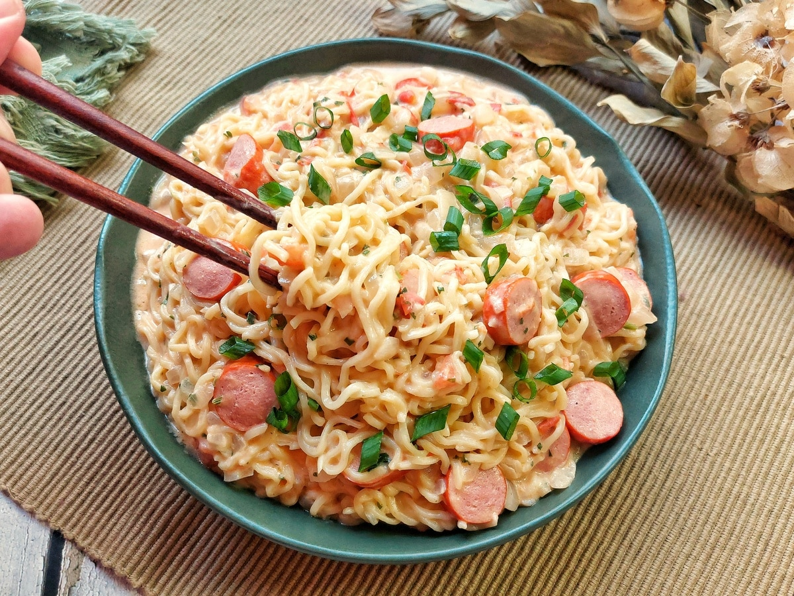

Instant noodles with sausages
Home

This creamy instant noodles with sausage dish is a quick and comforting meal that combines simple ingredients like instant noodles,
sausage, and creamy cheese spread.
It starts by briefly boiling the sausages before sautéing them with onion and tomato,
then cooking the noodles directly in the same pot with added seasoning.
The creamy cheese spread is stirred in at the end to create a rich and flavorful sauce that coats the noodles,
making it perfect for a fast lunch or dinner.
Igredients:
- 5 sausages
- 500 ml water (to boil the sausages)
- 2 packs of instant noodles (any flavor)
- 1/2 tablespoon butter
- 1 small onion, finely chopped
- 1 medium tomato, diced
- 4 tablespoons creamy cheese spread
- Chopped parsley (for garnish)
Steps:
- In a pot, heat the water and bring to a boil.
Add the sausages and cook for about 3 minutes. Drain and let them cool slightly, then slice into rounds.
- In a medium saucepan, melt the butter and sauté the chopped onion for about 3 minutes until it begins to soften.
- Add the diced tomato and cook until it begins to break down.
Then add the sliced sausage and the seasoning from the instant noodle packs.
- Pour in enough water to cook the noodles and add the instant noodles — breaking them in half can help them cook more evenly.
- Cook for about 3 minutes on medium-high heat, until the noodles are tender.
- Stir in the creamy cheese spread until well combined, then remove from heat.
- Garnish with chopped parsley and serve hot.